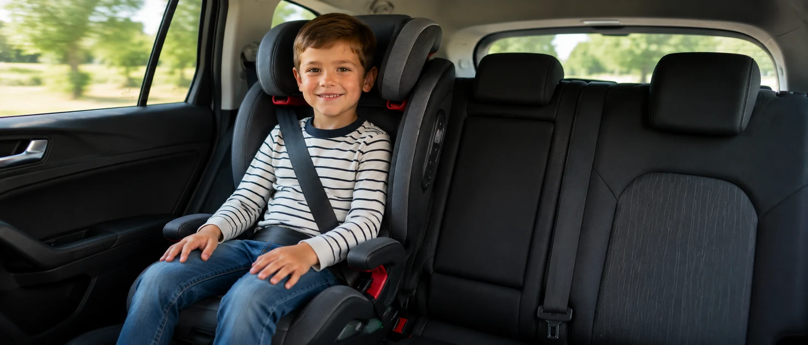
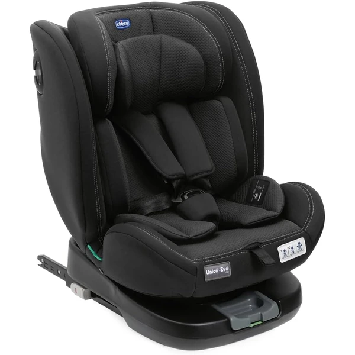
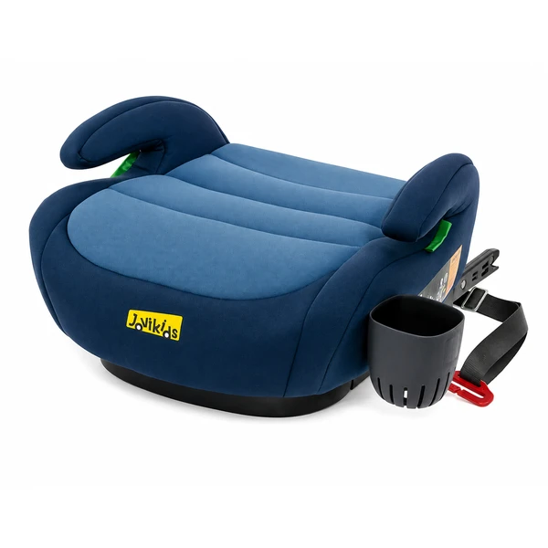
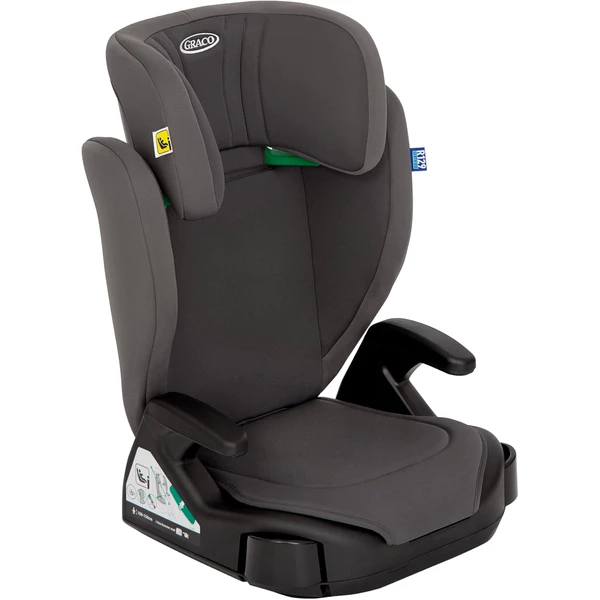

¿Qué grupo le toca a mi hijo? Tabla rápida
Si tu hijo ya ha superado la etapa de Grupo 0+ (13 kg / 12-15 meses aprox.), esta tabla te dice de un vistazo en qué grupo está ahora, según su edad, peso y altura:
Por qué hoy casi nadie compra "solo Grupo 2" o "solo Grupo 3"
El mercado ha cambiado: la mayoría de marcas ya no fabrican sillas de un único grupo suelto, sino modelos evolutivos que cubren varias etapas a la vez, para que no tengas que comprar una silla nueva cada pocos años.
Silla evolutiva Grupo 1-2-3 (la más común)
Acompaña al niño desde que deja el Grupo 0+ (unos 9 meses) hasta los 12 años aproximadamente. Es la opción que más familias eligen porque solo se compra una vez y se va adaptando con arnés y respaldo regulables.
Elevador Grupo 2-3 (a partir de los 3-4 años)
Para niños que ya se sientan solos con seguridad, sin necesidad de arnés propio — usan el cinturón del coche con el elevador como apoyo. Es más ligero y económico, pero solo a partir de cierta edad y peso.
Evolutiva vs. elevador: ¿cuál elegir?
¿Qué marca de sillita de coche elegir?
Compara las principales marcas de sillitas de coche y descubre sus diferencias antes de elegir la que mejor se adapte a tu familia.
Sillas evolutivas y elevadores destacadas
Seleccionamos modelos de las marcas más buscadas, cruzando marcas para que puedas comparar directamente:

Pallas G i-Size (G2)
Silla evolutiva a favor de la marcha con cojín de seguridad (escudo) en vez de arnés tradicional, pensada para acompañar desde que el niño deja el Grupo 0+ hasta los 12 años.
Características principales
Lo que destacan las familias
El sistema de cojín de seguridad (escudo), que varias reseñas destacan porque el niño no se les cae hacia delante al dormirse y reduce la sensación de tirones en el cuello frente a un arnés tradicional, además de lo sencilla que resulta la instalación con Isofix.

Unico EVO I'Size Classic
Silla evolutiva "para toda la vida" que cubre desde el nacimiento hasta los 12 años, con giro de 360° y arnés de 5 puntos.
Características principales
Lo que destacan las familias
La calidad de los materiales y la sensación de robustez, además de ser una silla "para toda la vida" que cubre todas las etapas sin tener que cambiarla.

Alzador Coche ISOFIX
Alzador sin respaldo, con conector Isofix como refuerzo de estabilidad junto al cinturón del coche, pensado para la etapa final entre los 6 y los 12 años.
Características principales
Lo que destacan las familias
Lo cómodo y acolchado que resulta en comparación con otros alzadores, además de lo sencilla que resulta la instalación gracias al Isofix.

Junior Maxi i-Size
Elevador ligero y económico para la etapa final, de los 3,5 a los 12 años, que se instala siempre con el cinturón del coche.
Características principales
Lo que destacan las familias
Lo ligera y fácil que resulta instalarla con el cinturón del coche, además de la buena relación calidad-precio para tratarse de uno de los modelos más económicos.
Ver también las guías completas de cada marca: Cybex, Chicco, Graco.
Preguntas frecuentes
¿Puedo saltarme el Grupo 1 y pasar directamente a un elevador?
No — el elevador Grupo 2-3 solo es seguro a partir de que el niño se sienta solo de forma estable y supere el peso mínimo indicado por el fabricante. Antes de eso necesita el arnés propio del Grupo 1.
¿Merece la pena pagar más por una silla evolutiva 1-2-3?
En la mayoría de los casos sí, porque evitas comprar 2-3 sillas distintas a lo largo de los años.
¿Hasta qué edad es obligatorio usar silla o elevador?
En España, hasta que el niño mida 135 cm o cumpla 12 años, lo que ocurra primero.
Guía informativa de Lauderem. Los enlaces a productos llevan directamente a la ficha en Amazon.es.